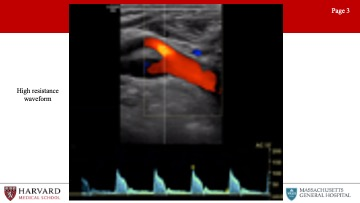
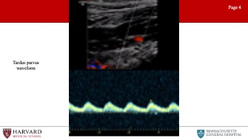
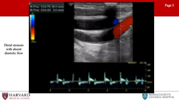
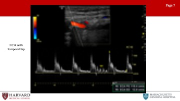
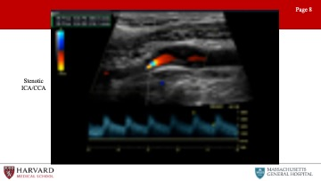
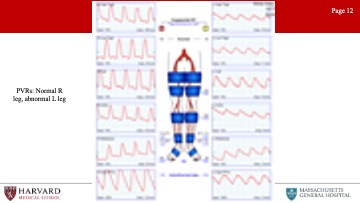
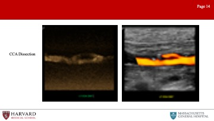
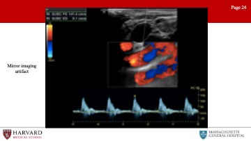
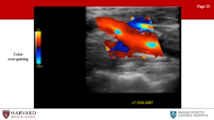
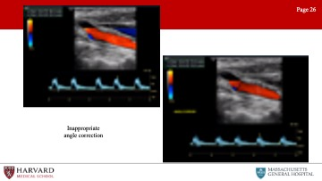

12 Vascular Lab
UNDER CONSTRUCTION - This Chapter is Currently in DRAFT mode
06 Jan 2022: Alaska Pendleton, MD and Aahita Dua, MD
Acknowledgements: A special thanks to Drena Root, Technical Director at the Massachusetts General Hospital Vascular Center, without whom this imaging would not have been possible.
So let’s start with an overview of ultrasound modalities, waveforms, and changes proximal and distal to flow-limiting stenosis:
12.1 Overview
Brief overview of ultrasound: Ultrasonography uses sound waves with frequencies higher than those audible to humans. Ultrasound images are created by sending pulses of ultrasound into tissue using a probe. Reflected pulses are recorded and displayed as an image. There are many types of ultrasound images, but two modes commonly seen in vascular ultrasonography are B-mode and doppler:
B-mode (Brightness) imaging is a 2-D, black and white display of tissue acoustic impedances.
Doppler mode uses the Doppler effect to measure and visualize blood flow.
Spectral Doppler converts frequency shifts from moving blood to velocities using the Doppler equation, and displays a “spectrum” of these frequencies as Doppler waveforms.
Color Doppler presents velocity information as a color-coded overlay on top of a B-mode image. Duplex ultrasonography is a term commonly used for the simultaneous presentation of B-mode and doppler data.
Power Doppler is less frequently use, but is based solely on amplitude of the doppler signal without giving information on direction. This is particularly useful to detect certain low or abnormal flow states, such as testicular/ovarian torsion, carotid string sign, slow intrarenal flow, supporting occlusion seen on B-mode or color.[519]
12.1.1 Waveforms
What do normal spectral waveforms look like?
Normal spectral waveforms have a brisk upstroke, sharp peak, rapid downstroke. A “spectral window” under the waveform, that is that black space between the spectral waveform and the 0 velocity axis, represents the absence of lower velocities-indicative of laminar flow within the vessel (Image 1: normal spectrum waveform)

How can we differentiate low vs high resistance waveforms?
Waveform profiles change depending upon the nature of the distal vascular bed being supplied. Organs like the brain, kidneys, liver, spleen, peripheral muscle during exercise, and postprandial SMA have constant high metabolic demand, and are therefore low resistance vascular beds. Low resistance waveforms for arteries supplying these organs demonstrate constant forward flow throughout the cardiac cycle because the distal bed being supplied has low resistance leading to high end-diastolic flow.

In contrast, high resistance waveforms are seen for arteries supplying resting peripheral muscles, fasted mesenteric beds (such as the fasting SMA), and the external carotid artery. High resistance waveforms are characterized by triphasic morphology, with a sharp peak, early diastolic flow reversal, brief forward flow (elastic recoil of the artery, and then no flow during the remainder of the diastolic phase.

How does flow-limiting stenosis change the waveform?
First let’s define Stenosis: A hemodynamically significant stenosis (area reduction >50%) will result in a doubling of velocity from the inflow segment to the area of maximal stenosis (velocity ratio > 2).
Now what do waveforms look like AFTER a flow-limiting stenosis?
Tardus et parvus refers to a pattern of Doppler ultrasound spectral waveform resulting from arterial stenosis. The tardus et parvus waveform is delayed with prolonged systolic acceleration (tardus) and diminished with a small systolic amplitude and rounded systolic peak (parvus). This phenomenon is observed downstream from the site of stenosis. Tardus parvus in the CFA represents upstream (iliac) stenosis. Tardus parvus in the brachial artery likely represents upstream (subclavian or axillary) stenosis.[519,520]

So what will the waveform look like BEFORE a flow-limiting stenosis?
Distal stenosis: Distal occlusive disease will result in a high resistance waveform, with absent diastolic flow. (Image 5: Distal stenosis with absent diastolic flow)

Now that we’ve covered the basics, let’s move through by organ- system high-yield vascular lab studies, findings, and pathologies.We’ll start with the extracranial evaluation, a highly-tested area of vascular ultrasonography.
Are there any considerations we need to understand when assessing a stented vessel with ultrasound?
Stenting decreases vessel compliance and increases observed velocities. There is no defined consensus, but in-stent restenosis is classified by some as follows:
>50%
>80%
It should be noted that restenosis of stents vs vein grafts in the lower extremity will have higher velocity for the same percentage of stenosis. Tardus et parvus waveforms distal to a stent should raise concern that stenosis is hemodynamically significant.[521,522]
Ultrasound compared to other diagnostic modalities
Duplex is often adequate to visualize any peripheral arterial bed, even the aorta and iliacs.[524]
CT - limitations include ionizing radiation, iodinated contrast and not appropriate in patients with CKD.
MRA - performed with gadolinium-based contrast and not appropriate in patients with ESRD.
12.2 Extracranial
What does a typical extracranial evaluation involve?
Examine CCA (2 views), ICA (2 views), ECA, vertebral arteries
What are normal ICA and ECA waveforms?
Normal ECA vs ICA waveform: The external carotid artery waveform reflects a high resistance vascular bed. This means minimal diastolic flow. Conversely, the ICA waveform reflects a low resistance vascular bed with antegrade diastolic flow.

This makes sense, as the ICA is supplying the brain while the ECA is supplying the face. Intuitively, the common carotid artery is a mixture of the ICA and ECA waveform morphologies. Like the ICA with forward flow throughout diastole, but less as compared to the ICA due to the high resistance influence of the ECA.
Another way of differentiating the external and internal carotid arteries is the “temporal tap”. Tapping on the superficial temporal artery (a branch of the ECA) will be transmitted as small pulsations in the diastolic component of the external carotid artery.[519,525]

Can you talk about diagnostic criteria for ICA stenosis?
Parameters for ICA stenosis: These are a few numbers that are (unfortunately) essential to memorize for the VSITE and RPVI.
Although criteria differ between guidelines, the Carotid Consensus Criteria, define ICA stenosis >= 70% as a peak systolic velocity >= 230 cm/sec, EDV > 100 cm/sec, and ICA/CCA ratio > 4.0. Of note, post-stenting criteria vary from pre-stenting criteria. Stenosis criteria are not clearly defined for the CCA or ECA.

When is surgery indicated for ICA stenosis?
Parameters for when surgery indicated:
Asymptomatic Carotid Atherosclerosis Study (ACAS) >60% stenosis asymptomatic, NASCET >50% stenosis symptomatic
For more see 2.
Let’s talk about other pathologies that can be visualized on extracranial ultrasound:
Pathologies: Stenosis (plaque), dissection (flap), aneurysms (rare), occlusion (no flow, do not operate), carotid body tumor (splaying of ECA/ICA, fed by ECA branches), FMD.
FMD is frequently encountered on the VSITE/RPVI. How would this appear on the exams?
Fibromuscular dysplasia of the internal carotid arteries affects women more commonly than men. Duplex findings show a “chain of lakes” appearance, demonstrative of multiple septa and small aneurysms. Velocity elevations and increased turbulence in the waveform patterns is typically found on Doppler interrogation.[526]

Aortic stenosis: Tardus parvus waveforms in both common carotid arteries can be a sign of more proximal disease of the aortic valve or global myocardial dysfunction.
How to treat?
Aspirin if asymptomatic, POBA if symptomatic.
Are there other frequently tested pathologies demonstrated on extracranial exam?
Subclavian steal: Subclavian steal occurs when a proximal subclavian stenosis or occlusion leads to reversal of vertebral artery flow. This causes “stealing” of blood from the posterior cerebral circulation, and presents as vertebrobasilar insufficiency.
How does this look on duplex?
Normal vertebral flow looks very similar to ICA: antegrade low resistance waveforms with constant forward flow throughout the cardiac cycle. As subclavian stenosis progresses, one can see mid-systolic velocity deceleration (’bunny ears”) , with mild stenosis bidirectional flow can signify “pre-steal” phenomena, and with severe steal, there is a complete reversal of flow in the vertebral artery towards the arm rather than towards the brain.[527,528]

Innominate stenosis: A phenomenon that is related to this, is innominate stenosis. Here again the patient will present with vertebrobasilar insufficiency, indicative of diminished vertebral antegrade flow, but additionally will experience right hemispheric insufficiency secondary to diminished R ICA antegrade flow. The right-side duplex will demonstrate flow reversal in the vertebral artery, abnormal waveforms in the subclavian, as well as steal pattern waveforms in the common and internal carotid arteries. The common denominator for all of these findings is significant disease in the innominate artery.
What other extracranial arteries of the head and neck can be evaluated separately?
Temporal arteritis - well visualized with high frequency transducer (10 MHz or greater). Pathognomonic halo effect of anechoic/hypoechoic edemetous tissue surrounding the lumen due to concentric inflammation.[529,530]
12.3 Intracranial
So that covers extracranial vascular lab evaluation. What about intracranial?
This is less frequently tested, so we will discuss just a brief overview of views and some of the more commonly tested pathologies related to transcranial doppler (TCD).
Intracranial:
Three primary views: temporal, foraminal (occipital), orbital views
Temporal view: Used to interrogate PCA, ACA, MCA, and ICA. The MCA, ICA and PCA flow direction is towards the probe, the , The ACA flow direction is AWAY.
Occipital view: Basilar and vertebral arteries (both away).
Orbital view: Ophthalmic and ICA
Arteries differentiated by depth. MCA 3-6 cm, everything else deeper.
What are some frequently tested pathologies that are identified on TCD?
Indications often tested:
MCA spasm (severe PSV>200): Can be seen in sickle cell disease with studies indicating a strong correlation between mean velocities of >200cm/s and the rate of stroke in children with sickle cell disease. With blood transfusions, stroke risk can be reduced from >10% to <1% per year.[531]
Lindegrad ratio is the MCA velocity divided by the distal ICA velocity and can also be used to assess MCA spasm.
Ratio of 3-6 is indicative of mild-mod vasospasm.
>6 is severe vasospasm.
<3 is a sign of hyperemia.[532]
Cerebral ischemia during CEA: Comparing transcranial Doppler sonography, near-infrared spectroscopy, stump pressure measurement, and somatosensory evoked potentials, cerebral ischemia was most accurately predicted by the percent change in transcranial Doppler detected middle cerebral artery velocity. Detection of a greater than 50% drop in middle cerebral artery velocity using transcranial Doppler is 100% sensitive for detecting cerebral ischemia.[533]
- TCD can also demonstrate microemboli (high spikes of white vertical lines on spectral doppler) during CEA.
A shower of bubbles in both cerebral hemispheres upon injection with agitated saline is consistent with a R to L cardiac shunt and patent foramen ovale.[534]
Elevated contralateral ICA velocities can demonstrate compensatory flow and collateralizaiton and can be a sign of persistent MCA occlusion.
Mechanical Compression of the vertebral arteries: TCD will show normal posterior circulation velocities at rest, disappearance of waveform on provocative maneuvers, and increase in velocity once back in a neutral position representing a reactive hyperemia.[535]
Vasomotor activity can be evaluated as well with TCD. Hypercapnia or breath-hodling should result in vasodilation and increased flow. Hypocapnia in decreased flow. No change in response to hyper or hypocapnia can show poor cerebral autoregulation.[536]
Reversal of flow in the ophthalmic artery can be a sign of ipsilateral ICA occlusion.[537]
Brain death determination - In patients with cerebral arrest (brain death) TCD will demonstrate a low amplitude, high resistance waveform with to and fro flow with a zero net flow.
12.4 Upper Extremity
Having covered head and neck vasculature, let’s move on to peripheral vasculature. This is a huge area both on the VSITE/RPVI and in practice. In this section we’ll cover first the upper, then the lower extremity vasculature.
So first, what are characteristics of waveforms in the peripheral vasculature?
Peripheral: Normal waveforms are indicative of high resistance distal beds, so we would expect triphasic waveforms
What are normal arterial parameters in the upper extremities?
Normal pressure gradient between the right and left brachial pressures is <20 mmHg. Normal finger pressure is >80% of the ipsilateral brachial systolic pressure. Digital brachial index <0.8 is abnormal and <0.5 is diagnostic of ischemia. Absolute digital pressure <70mmHg is abnomal and <60mmHg is diagnostic for ischemia. A gradient between digits of >15 mmHg is considered abnormal. These criteria are used in occlusive disease and steal syndrome.[538,539]
Let’s talk about some of the most frequently tested pathologies, starting with arterial TOS.
Arterial TOS: Results from compression of the subclavian artery at the level of the first rib within the scalene triangle. Arterial TOS testing is done by placing a sensor, most often photoplethysmography (PPG), on one finger of each hand, recording the resting waveforms and then recording while during maneuvers to evoke arterial compression in the thoracic outlet.[525]
Can you tell us a little more about PPG testing?
Photoplethysmography (PPG) uses an infrared light to illuminate superficial tissue. The reflection is received by a photosensor, and amplitude of the reflected light is proportional to the volume of red blood cells in the sample area. A normal digital arterial PPG has a brisk upstroke with a narrow systolic peak, and a dicrotic notch on the downslope during diastole.[540]

Digital PPGs change with progression of peripheral vascular disease. The first changes are a loss of amplitude and loss of the dicrotic notch. More advanced disease findings include a flattened systolic peak and a prolonged upstroke. Significant arterial TOS is suggested when there is a loss or persistent flattening of the digit waveforms during any of the positional changes that can compress the subclavian artery (either with the clavicle, first rib and scalene muscle). However, it should be noted that up to one-third of patients without arterial TOS may have some degree of subclavian artery compression with positional maneuvers.
What are other diseases affecting the upper extremity?
Raynaud’s: Vasospastic disorder characterized by temporary vasospasm. Diagnosis may be assisted by decrease in digital waveforms with immersion of the hand in cold water.
Thromboangiitis obliterans: Is a segmental non-atherosclerotic inflammatory disorder characterized by microthrombosis that primarily involves the small- and medium-sized arteries. Ultrasonography may demonstrate the classical “corkscrew” collateral development at the level of occlusion. TA has a male predominance and first line treatment is smoking cessation.
12.4.1 Hemodialysis Access
Before we segue to the lower extremities, this is a good time to discuss an entity frequently tested on the VSITE, and that constitutes for many vascular surgeons a notable portion of their practice, and that is hemodialysis access, and specifically fistulas.
Fistulas: Ultrasound is one of the key modalities used in identifying suitable anatomy for fistula placement, suitability of a fistula for dialysis, and finally complications of fistulas.
So first, assessment for fistula placement:
The optimal configuration for an AVF is determined on the basis of vein mapping and noninvasive studies. Veins should measure >3 mm in diameter (>2.5 mm may be acceptable, as veins are likely to dilate under anesthesia), and there should be no arterial inflow stenosis or venous outflow stenosis. Duplex ultrasound arterial imaging can be performed at the same time as vein mapping and can provide important predictors of fistula maturation, such as arterial diameter and flow. The minimal arterial lumen diameter is 2 mm.
How can we tell if a fistula is ready to be used for hemodialysis access?
Rule of 6’s: At six weeks post-creation the diameter of the fistula should be at least 6 mm and the depth no more than 0.6 cm. The flow rate should be at least 600mL/min, and the length of the fistula should be 6 cm to allow for a successful two-needle dialysis.
Brachial artery volume flow rate (VFR) is one of the best measurements to identify poor fistula maturation. >800 ml/min is ideal, but >600 is often sufficient.[541]
What do normal fistula spectral waveforms look like?
Waveform: The arterial waveform should demonstrate very low resistance throughout diastole. End diastolic velocity should be one half to two thirds of peak systolic velocity in a well-functioning fistula. As a side note, this is also what one would see in an iatrogenic arteriovenous fistula, as between the femoral artery and vein.[542]
Let’s discuss commonly encountered complications and pathologies identified in association with fistulas:
Pseudoaneurysms: Pseudoaneurysms commonly occur when a puncture fails to seal and the blood is contained by the surrounding soft tissue. As in other locations, pseudoaneurysms are defined on imaging by a communicating neck between the arterial vessel and pseudoaneurysmal sac with “to-and-fro” waveform at duplex.[543] While small pseudoaneurysms can be managed without intervention or surgery, larger pseudoaneurysms, pseudoaneurysms associated with infection or overlying skin changes or bleeding may require excision and repair.[544]
Steal syndrome: Hemodialysis-related steal, also known as access-related hand ischemia, which may occur in over half of all patients undergoing access creation. Steal is characterized by retrograde diastolic flow distal to the donor artery. Of note, reversal of flow in and of itself is not sufficient to cause distal ischemia with an intact palmar arch. This is commonly seen after access creation and represents physiologic steal phenomenon, rather than symptomatic steal syndrome. Digital pressures <60 mm Hg are highly sensitive and specific for predicting steal. Patients who have no symptoms (Grade 1 access-related hand ischemia), may be closely monitored without any intervention.
How do we treat more severe steal?
Flow rate measurements of the fistula can help determine the optimal treatment (banding, revision using distal inflow, distal revascularization with interval ligation, proximalization of arterial inflow or ligation of the fistula). For more on steal, see 11.3.3
So steal can occur in the context of high fistula output, can we talk a bit about low fistula flow, as from stenosis?
Central venous stenosis: Venous outflow stenosis is the most common reason for arteriovenous graft failure. A low flow rate results in recirculation during the dialysis session. Venous obstruction manifests as arm swelling, and with central venous stenosis may present with collateral development over the upper extremity and chest wall.
Stenosis of fistula: Arterial and mid-graft stenosis can also cause complications, but are less common than venous stenosis. Stenosis on imaging will be represented by narrowing of luminal diameter of 50% (which correlates to a 75% reduction in cross-sectional area) on b-mode ultrasound, PSV>400, Vr >2,5, high-resistance waveform proximal to the stenosis, and tardus parvus waveform distal to the stenosis.[544]
12.5 Lower Extremity
Can you please tell us about some of the diagnostic modalities that are used to examine perfusion in the lower extremities?
ABIs: Ankle-brachial index measurement requires calculating the ratio of the highest ankle systolic pressure (posterior tibial artery or dorsalis pedis) over the highest brachial systolic pressure. Regardless of whether you’re doing the R or L ABI, use the higher arm pressure for both ratios. Normal ABI >0.9, severe disease indicated by ABI<0.5, and CLI by ABI<0.3.
The ankle-brachial index in diabetic patients is frequently unreliable due to incompressibility of the tibial vessels at the level of the cuff secondary to calcification. Consequently, toe pressures are mandatory in all patients with diabetes mellitus. Normal TBI>0.7.
Of note, monophasic waveforms in the brachial artery likely represent proximal occlusive disease in the upper extremity and therefore make the ABI non-diagnostic because the upper extremity blood pressure is not likely not representative of central blood pressure.[545]
TcPO2: When there is significant tissue loss, preventing TBI measurement, another option is transcutaneous oximetry (TcPO2).[546] Transcutaneous oximetry is a non-invasive method of measuring the tissue partial pressure of oxygen through a heated sensor on the skin. A TcPO2 value of 40 mmHg is the critical value below which wound healing is impaired and ischemia develops.
Are there other non-invasive ways of determining extremity perfusion?
PVRs: Pulse volume recordings. Normal PVR waveforms have a rapid upstroke, sharp peak, prominent dicrotic notch and downslope. Typically 4 cuffs. High thigh cuff should be 30% greater than brachial pressure, hence a thigh-brachial index of 1.3 is normal. However, ABI/PVRs may not demonstrate significantly abnormal values/waveforms in individuals with single level disease.

Exercise Test: During exercise testing, patients are placed on a treadmill after baseline resting ABIs are measured. The patient is then asked to walk for 5 minutes or until physical discomfort requires test cessation. The point when patient reports pain starts is the initial claudication distance and the point where the patient stops is defined as the absolute claudication distance. Diagnostic criteria for a positive test include a drop-in ankle pressure of greater than 20 mmHg from baseline, drop in ABI greater than 0.2 from baseline, or inability of ankle pressures to return to baseline after 3 minutes.[547]
So just to briefly summarize, what are parameters associated with poor wound healing?
Parameters associated with poor wound healing: Considering these various testing modalities, what are factors associated with poor likelihood of wound healing? An ankle pressure <50 mmHg, ABI < 0.40, TcPO2 <20 mmHg, or a toe pressure <20 mmHg are considered predictive of non-healing.
What is the utility of duplex in diagnosing lower extremity occlusive disease?
Duplex ultrasound is utilized to further delineate the anatomy, level and severity of occlusive disease. Increased PSV can identify the site of a hemodynamically significant stenosis. Diminished waveforms often suggest more proximal disease.
Of note, diffuse narrowing of the SFA can result in tardus et parvus waveforms in the popliteal, without necessarily demonstrating any areas of high velocity.[5,519]
While duplex ultrasound most easily visualises infrainguinal arterieal disease, it can also be used to evaluate for iliac artery stenosis. Patients with an iliac Vr>2.5 or monophasic/biphasic waveforms in the CFA, suggest that further imaging of the iliac system may be required.[548]
Ultrasound is frequently used for graft surveillance. Can you talk about graft surveillance parameters?
Suggested bypass vein graft surveillance with ABI, clinical exam and duplex should begin immediately after surgery and then continues at 3, 6, and 12 months and then every 6 to 12 months thereafter.[336,549] A velocity ratio (Vr) is often utilized in graft surveillance and is defined as the peak systolic velocity (PSV) at the site of a stenosis divided by the PSV in a normal vessel segment proximal to the stenosis.
The highest risk for graft thrombosis, and highest cause for concern is suggested by PSV >300 cm/s, Vr >3.5, a mid-graft flow velocity <45 cm/s or a drop in ABI >0.15.[336,550]
Increased risk grafts have a PSV 180-300 cm/s and a Vr 2.0-3.5.
Spectral pulse wave doppler is more sensitive than color doppler to identify low flow states or thrombosed grafts.[551]
Criteria for prosthetic grafts is higher than vein bypass.[336]
Intervention for recurrent vein bypass graft stenosis early after angioplasty may be best treated with an open revision and patch plasty.[552]
Presenting with new swelling, pain and fluid around a prosthetic graft on duplex ultrasound may be a sign of underlying graft infection. PET and WBC scans may be positive up to 4mo after implantation, so do not provide much utility in the early post-operative period.[553]
12.5.1 Pathologies
Let’s talk about pathologies frequently encountered in the lower extremities:
12.5.1.1 Pseudoaneurysms (particularly femoral)
Gray-scale ultrasonography demonstrates a hypoechoic cystic structure adjacent to an arterial supply. Color Doppler typically demonstrates a “yin-yang sign” within the pseudoaneurysm sac. The hallmark ultrasound sign is identification of a neck between the sac and the feeding artery with a “to-and-fro” spectral Doppler waveform measured at the neck. This represents the flow in and out of the PSA during systole and diastole.

Anastomotic pseudoaneurysms develop in around 3% of femoral anastomoses and can be associated with arterial wall weakness, endarterectomy, mismatch between artery/graft, dilation/deterioration of graft material, increased/uneven tension of anastamosis, underlying infection.[519]
12.5.1.2 Dissections
Characteristic ultrasound findings on color Doppler include a parallel blood-flow channel that separates the true and false lumen, with diminished blood flow distally.[554,555] Traumatic intimal flaps after knee dislocation can have a normal ABI and be asymptomatic, but they should be followed as they can progress.[556] Of note, if the false lumen is filled by a thrombus, it may not distinguishable from an intramural hematoma or noncalcified plaque

12.5.1.3 Buerger’s Disease
Rare disease, but with characteristic findings on ultrasound of serpiginous/corkscrew collaterals, occlusion of distal calf/pedal arteries, and normal proximal arteries.[134,135]
For more see 3.3.4
There are several disease pathologies that are frequently tested relating to the popliteal fossa. Can you talk briefly about these?
12.5.1.4 Cystic Adventitial Disease
This is a rare (but often tested) pathology. Adventitial cystic disease is a non-atherosclerotic etiology of claudication, most often affecting the popliteal artery in the lower extremity and leading to stenosis or occlusion. Duplex imaging of the popliteal artery will demonstrate an anechoic or hypoechoic intraluminal region with a smooth contour and stenosis documented by velocity increase on spectral doppler. Angiography will often show a classic “scimitar” sign - smooth well defined crescent-shaped defect.[557,558]

For more on adventitial cystic disease, see 5.7.2. This is not to be confused with:
12.5.1.5 Bakers Cyst
A benign, cystic structure found in the popliteal fossa and arising from the joint capsule. Flexion of the knee may result in compression of the popliteal artery by the cyst. On b-mode ultrasound, a well-defined, anechoic cystic structure with a ‘neck’ extending into the joint space between the semimembranosus tendon and the medial head of the gastrocnemius will be identified.

Popliteal entrapment syndrome: decrease in ABI or loss of distal pulses with passive dorsiflexion or active plantar flexion of the foot caused by compression of the popliteal artery by the gastrocnemius.
12.6 Abdominal
12.6.1 Aorta
Abdominal Aortic Aneurysms (AAA): Ultrasound screening of a AAA is non-invasive, accurate, and cost-effective.[190]
Sensitivity of 98% and specificity of 99% for AAA diagnosis.[559]
Aneurysm is measured in transverse view, anterior to posterior diameter, outer wall to outer wall.[560] Size criteria for AAA repair is 5.5 cm men, 5.0-5.5 cm in women.
Can be limited by bowel gas or obesity - so recommend fasting
For more details, see4.
Can ultrasound be used for graft surveillance s/p EVAR?
Surveillance color duplex ultrasound is safe if CT imaging at 1 year exhibits no sac growth, graft migration, or endoleak (or stable type II endoleak). Contrast enhanced duplex, in particular, has a high sensitivity and specificity to detect endoleaks.[561–563]
Type II endoleaks classification is subdivided on surveillance duplex. Type IIa has a single inflow vessel and a “to-and-fro” appearance, whereas Type IIb has multiple vessels and maintains a monophasic flow. Type IIa endoleaks with velocities greater than 100cm/sec are not likely to spontaneously resolve and may be resistant to therapy.[564,565]
Type II endoleaks with stable sac size can continue surveillance with color duplex.[190,563,566] Any findings concerning for growth, endoleak or flow in the sac should have confirmatory CTA performed.[567]
Surveillance duplex does not reliably detect graft migration given challenge of renal arteries visualization in a long axis view of the aorta.[568]
Velocities within stents are elevated from baseline due to stent rigidity, but a limb velocity >300cm/s with a Vr >3.5 is associated with a high risk of limb occlusion from stenosis or kinking and should undergo further investigation or intervention.[190,569]
What other pathologies can be identified on ultrasound evaluation of the abdomen?
CIA aneurysms: SVS defines CIA aneurysms as any permanent, localized dilatation of the iliac artery >1.5 cm in diameter (diameter 1.5x the normal diameter)
Para-anastomotic pseudoaneurysms: As previously discussed (reported in up to 0.5% to 10% of cases)
Penetrating aortic ulcers: Describes an ulcerating atherosclerotic lesion that penetrates the intima and progresses into the media. Associated with atherosclerotic plaque on ultrasound
Dissections: (as already discussed) a dissection flap is usually identified and color flow demonstrates dual channels (true and false lumens). Turbulent flow patterns are frequently encountered.
12.6.2 Mesenteric Vasculature
So far we have steered clear of the mesenteric vasculature. But this is an area frequently encountered on exams. Let’s start with mesenteric vessel stenosis.
Celiac and SMA stenosis: May present as chronic mesenteric ischemia. PSV >275 cm/s in the SMA or >200 cm/s in the celiac artery indicates >=70% stenosis. Normal SMA Doppler waveforms in the fasting patient show high resistance waveform, PSV <275 cm/s and no spectral broadening. In the postprandial state, the waveform becomes low resistance, with a slightly increased PSV and little to no spectral broadening. Significant SMA stenosis may be differentiated by the presence of spectral broadening and elevated PSV (>275cm/s) and EDV (>55cm/s).[389,570] Distal to the stenosis, one would expect a tardus parvis waveform. EDV >45 in SMA or >55 in celiac are predictive of stenosis (would expect higher diastolic flow in celiac trunk given low resistance vascular bed of liver and spleen).
Reversal of flow in the hepatic artery and mildly elevated SMA velocities may indirectly signify severe stenosis or occlusion of the celiac artery.
Note that aberrant anatomy with the hepatic artery arising from the SMA, will result in the proximal SMA demonstrating a low resistance waveform, even in the fasted state.[519]
Mesenteric duplex is still valid even if the patient has not fasted. The images may be technically more difficult to acquire due to bowel gas, however if velocities can be obtained, you a re likely to see elevate PSV and low resistance waveform in the SMA. The EDV will also be elevated and should be interpreted with caution.
IMA Stenosis: PSV >200 cm/s or aortic ratio >2.5 has a high sensitivity for hemodynamically significant stenosis. However, this is rarely clinically significant and does not require treatment.
What other mesenteric vessel pathologies may be identified on vascular ultrasound?
Dissections: Rare without concomitant aortic dissection, describe only in case reports.[571,572]
Aneurysms: Rare. Repair >2 cm celiac, hepatic, SMA aneurysms and >3 cm splenic and renal.
Median arcuate ligament syndrome: MALS can cause significantly elevated velocities at the origin of the celiac artery. Testing is for reversible mechanical compression, as opposed to a fixed lesion from atherosclerotic disease. During deep inspiration or in the upright position the MAL is elevated and celiac velocities should normalize if stenosis is secondary to MALS.[573]
Hepatic artery thrombosis: Mesenteric duplex is often performed in liver transplant patients. Hepatic artery thrombosis most often occurs within the first 30d after liver transplantation, with an incidence of 1.5-9% and a mortality rate of 75%.[574,575]
12.6.3 Portal Vein
So I recognize that we are jumping ahead here discussing venous circulation, but as this represents another component of a mesenteric vascular exam, let’s discuss portal venous ultrasonography.
Normal portal venous flow is hepatopetal (toward the liver), whereas abnormal portal venous flow is hepatofugal (away from the liver). (The root “fugua” means to flee, or flight). Flow should be in the same direction as the hepatic artery.
Other abnormalities that may be visualized are portal vein thrombosis—often associated with portal venous hypertension in patients with chronic cirrhosis, hepatitis, or hepatocellular carcinoma. Acute portal vein thrombosis on ultrasound demonstrates dilatation of the portal vein with hypoechoic intraluminal thrombus. Chronic portal vein thrombosis is characterized by a contracted vein with heterogeneous/hyperechoic echoes and may be associated with collateral formation.[576,577]
Mesenteric duplex can also assess for functioning of TIPS (transjugular intrahepatic portosystemic shunt). A sign of a failing TIPS is portal vein peak systolic velocity less than 30cm/s.
12.6.4 Renal arteries
Awesome, and so before jumping fully into venous circulation, let’s complete our discussion of abdominal ultrasound evaluation with a discussion of the renal vasculature.
Renal Pathologies: ostial (atherosclerotic) vs mid-artery (FMD)
Atherosclerotic stenosis: PSV > 285 cm/s and Renal-aortic ratio (RAR) >3.5, suggests >60% stenosis.[578] However aortic PSV needs to be within normal range (40-100) to be appropriately interpreted.
The renal resistive index (RRI) is calculated as the RA (PSV-EDV)/PSV. The RRI (>0.8) is an indicator of intrinsic parenchymal renal disease. RRI has been used for assessment of transplant renal allograft rejection, decision making for treatment of renal artery stenosis, and evaluate progression of CKD. Diabetic nephropathy will demonstrate elevated RRI, signifying parenchymal disease.[579] One study showed it was associated with poor renal and overall outcome in critically ill patients.[580]
FMD: Fibromuscular dysplasia (FMD) will demonstrate tortuous renal arteries with turbulent flow and increased PSV of the mid-distal portions. Beading may be difficult to see on ultrasound (compared to the extra-cranial carotid). Atherosclerosis disease is primarily ostial in nature.
In stent restenosis: Higher cut off values are required to determine in stent restenosis.[578,581]
12.7 Venous
Venous Exam: Uses a linear transducer. Complete deep venous reflux duplex examination includes color and pulsed wave spectral doppler imaging. Spontaneous Doppler waveforms as well as provocative maneuvers are recorded in the common femoral, femoral, popliteal, and tibial deep veins. Superficial veins (GSV, SSV, and perforator veins) are evaluated with provocative maneuvers to test valve competency. Diameters are also included for superficial veins. Transverse B-mode images are used for vessel compression (as when looking for thrombus) to ensure that the vein is fully compressible under probe pressure as opposed to simply slipping out of view, as may occur in longitudinal views. Reflux exam should be performed with a patient standing, with assessment performed on the non weight-bearing leg.
We’ve talked extensively about normal arterial waveforms; what do normal venous waveforms look like?
Normal venous waveforms: Normal flow patterns of iliac and femoral veins demonstrate phasicity and should augment with distal compression. In the upper extremity central veins, doppler waveforms normally demonstrate pulsatility and phasicity.
What does this mean? Pulsatility, phasicity, and augmentation?
Pulsatility: Refers to changes in the venous waveform in accordance with the cardiac cycle. Pulsatility is normal in the upper extremity veins central veins, given their proximity to the heart.

This is an abnormal finding in the lower extremity veins, and may be a sign of pulmonary hypertension, right heart failure, or tricuspid regurgitation.
Phasicity: (also called respiratory phasicity) is variation in the waveform with respiration. This results from increasing and decreasing intrathoracic pressures secondary to respiration. Phasicity is an indicator of a patency proximal to the point of measurement. So if we see lack of phasicity (continuous flow) in the left femoral vein but normal phasicity in the right, we would be concerned for left iliac vein occlusion or stenosis. If we saw absence of phasicity (continuous flow) in the bilateral femoral veins, we would be concerned for IVC obstruction or stenosis.

Augmentation: Distal compression that augments forward flow. For example, if we are measuring flow at the femoral vein and we squeeze the calf and we see augmentation in the waveform, this indicates lack of occlusion in the venous system from the knee to the probe.

What are venous pathologies that are commonly tested/encountered?
Reflux: Venous reflux due to valvular incompetence is best assessed with duplex scanning in the upright position. Reflux in the common femoral vein and the saphenofemoral junction may be elicited with a Valsalva maneuver (which increases intra-abdominal pressure), but release of a pneumatic cuff compression is a more reproducible method. Reflux is identified as reverse flow - that is, away from the heart - following valsalva or release of the compression cuff.

Consensus guidelines suggest a cutoff value of 1 second for abnormally reversed flow (reflux) in the femoral and popliteal veins and of 0.5 seconds for the great saphenous vein, small saphenous vein, tibial, and deep femoral veins.
Perforator veins: Perforator veins connect the deep and superficial venous systems, penetrating the deep fascia overlying the muscle. Size >3.5 mm and reflux >350 ms (deep to superficial) is associated with perforator reflux. Pathological perforator = in association with a healed or non-healed ulcer.
What are some other examples of reflux?
Ovarian vein reflux: The ultrasound evaluation of pelvic congestion syndrome is performed in steep reverse Trendelenburg and standing positions with a low-frequency probe. Reflux is identified during the Valsalva maneuver. There are no validated criteria for the duration of reflux. Rather, an ovarian vein diameter >6 mm is considered significant.
May Thurner: Also known as iliac vein compression syndrome, refers to a chronic compression of the left common iliac vein by the overlying right common iliac artery (CIA), with or without deep venous thrombosis. Notably, patients present with unilateral (left) lower extremity edema and pain, varicosities, DVT or venous ulcers. Intravascular ultrasound will demonstrate >50% stenosis of the iliac vein from compression. Distal waveforms will demonstrate absence of phasicity if obstruction/stenosis is severe with continuous flow.
Ok, let’s transition from reflux to thrombosis:
Thrombosis: Characteristics of acute thrombus are an echolucent and incompressible thrombus in a thin-walled vein with significant distension.

Acute thrombus typically causes the vein to dilate with a diameter greater than the diameter of the adjacent artery. Venous wall thickening/scarring, a contracted vein, recanalization, and collateralization is found in chronic thrombosis.
Let’s discuss 2 Specific examples of venous thrombosis: VTOS and EHIT
Venous TOS: Venous thoracic outlet syndrome is thrombosis or severe stenosis of the subclavian or axillary veins secondary to chronic extrinsic mechanical compression. Repetitive injury to the subclavian vein at the level of the costoclavicular space results in chronic injury to the veins. Venous duplex may show a dilated, non-compressible vein consistent with an acute subclavian vein DVT, or lack of pulsatility/phasicity if obstruction/stenosis is more centrally located.
EHIT or Endovenous Heat Induced Thrombosis: S/p endovenous thermal ablations (RFA or laser ablation) of the GSV. 4 Grades: Grade 1 is thrombus in the GSV up to the level of the CFV. If < 50% of the CFV lumen is involved this is EHIT grade 2. EHIT grade 3 is extension into the CFV occupying >50% of the lumen and grade 4 is occlusion of the CFV.

EHIT grades 3-4 are typically treated with anticoagulation to reduce risk of PE. To minimize the risk of EHIT, the catheter should be positioned at least 2 cm from the saphenofemoral junction.
12.8 Artifacts
Finally, let’s wrap up this episode with a discussion of imaging artifacts. These are frequently encountered and tested in vascular ultrasound, and it is important to recognize imaging artifacts in order to prevent incorrect interpretation.
Acoustic shadowing: Shadowing on an ultrasound image is characterized by a signal void behind structures that strongly absorb, reflect, or refract ultrasonic waves.

Practically speaking, this most typically occurs deep to strongly reflective surfaces such as calcified plaques, and appears as a “dark area” beneath the plaque. Acoustic enhancement is essentially the inverse situation, and appears as a “bright area” deep to structures that transmit ultrasound waves exceptionally well. This can happen deep to fluid-filled structures such as cysts.
Mirroring: A mirror-image artifact is caused by reverberation of ultrasound and shows structures that exist on one side of a strong reflector as also being present on the other side of the reflector.

This is often seen around the pleura and the diaphragm, due to the strong reflection of ultrasound from the air-filled lung. These artifacts can occur in both B-mode imaging where you see the mirrored image and Doppler, in which you see the mirrored waveform.
Refraction: A refraction artifact is the result of ultrasound waves passing through tissues with different propagation velocities (such as air and water) and causes a structure to be improperly positioned laterally in the image. This is the phenomenon that results in a straw appearing bent when in a glass of water.
Speed artifact: Depth determination by an ultrasound machine is based on calculations using an average propagation velocity of sound in soft tissue of 1540 m/s. If the ultrasound wave passes through a medium at a different speed than predicted by the machine, an inaccurate image depth will be displayed. If the ultrasound passes less quickly through the material than soft tissue (as occurs in air or fluid), then the image will be displayed deeper than the true depth. In practical application, this is what causes a “bayonet” sign, or apparent bending of a needle when it passes from soft tissue into a cystic structure.
Inappropriate color gain: Overly gained images will show “speckling” in areas in which no flow is present (such as in soft tissue). Increasing the gain, increases both the signal and the noise.[584]

Under-gaining will result in reduced sensitivity to low velocity flow.
Inappropriate angle correction: Make sure the angle correction cursor is centered in the vessel and parallel to the walls, otherwise the Doppler velocity measurement will be incorrect.

Finally, can we talk about aliasing, as I feel like this comes up a lot on exams:
Aliasing: Unlike continuous wave Doppler, pulsed wave and color flow Doppler are characterized by rapid pulses of ultrasound waves (at a rate called the pulse repetition frequency). The Nyquist limit defines the frequency at which aliasing will occur, as equal to the PRF/2. So what does this mean practically? In pulsed wave doppler, if the velocity of blood is greater than ½ the PRF, the peak velocity will be cut off, and wrapped around to the bottom of the scale.

This results in inaccurate measurement of peak velocities, and may be remedied by increasing the PRF and hence the scale. In color flow doppler, aliasing appears as red to blue hues without separation of a black region indicating no flow. This occurs in areas of high velocity (such as immediately post-stenosis). This can be remedied with an increase in the color scale. Of note, if asked to determine the direction of blood flow in a vessel demonstrating aliasing, one should assess the flow in low-velocity areas of blood flow, as seen along vessel walls.
12.9 Accreditation and Credentialling
Intersocietal Accreditation Commission (IAC) Accreditation - voluntary, not linked to reimbursement but may be required by some payers, medical director must have a certain training/experience, including RPVI as one way, technical director must have credentials through ARDMS, CCI or ACR with recredentialing every three years.[560]
- Physician accreditation with RPVI requires recertification every 3 years with 30 hours of CME specifically in the area of vascular ultrasound.
Regulations for a completed vascular exam report[560]
Patient identifier
Date of exam
Sign/symptom as indication - medical necessity should no just include “rule out”
Reasons for any limitations to the examination
Comparisons to any previous related studies
Reported by medical staff within 2 working days and final report verified within 4 working days.
Troubleshooting examinations
Any concerning acute findings, such as mobile intra-arterial material concerning for embolism, should be reported to the supervising/reading physician immediately before completing the examination.[585]
Some modifications to tests can be made if the patient is unable to tolerate, such as standing or tolerating a valsalva maneuver.[585]